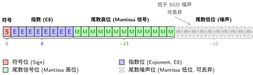
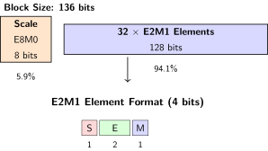

模型优化：量化与剪枝#
ONNX：模型的中立语言中我们把PyTorch模型导出成了ONNX格式，有了一个标准化的模型文件。但在真正部署之前，还有一个关键问题要解决：这个模型够"轻"吗？
一个典型的ResNet-50模型，用FP32存储需要约100MB的磁盘空间，推理一次需要约4 billion次浮点运算。如果要在手机上跑，100MB的下载包太大；如果要在服务器上同时处理100个请求，显存可能不够；如果推理延迟超过100ms，用户体验就会变差。
量化（Quantization）和剪枝（Pruning）是两种最核心的模型优化技术，目标都是"用更少的资源，达到接近原始的效果"。量化降低参数的表示精度（从32位浮点降到8位整数），剪枝直接删除不重要的参数（让权重矩阵变稀疏）。
学习目标
完成本节后，你将能够：
理解量化的原理：对称量化 vs 非对称量化、动态量化 vs 静态量化
使用 PyTorch 的量化 API 对模型进行 INT8 量化
使用 ONNX Runtime 对导出的 ONNX 模型进行量化
理解剪枝的原理：非结构化剪枝 vs 结构化剪枝
使用 PyTorch 的剪枝 API 实现基于幅度的剪枝（Magnitude-based Pruning）
评估量化和剪枝对模型大小、推理速度和准确率的影响
为什么需要模型优化？#
引言：训练完模型之后中我们讨论了模型从训练到生产面临的挑战——格式兼容性、架构选择、运维复杂度。但还有一个贯穿始终的挑战没有展开：性能约束。
部署场景 |
模型大小限制 |
延迟要求 |
典型硬件 |
|---|---|---|---|
云端服务器 |
< 1 GB |
< 100 ms |
GPU (V100/A100) |
边缘设备 |
< 100 MB |
< 10 ms |
CPU / NPU |
移动端 |
< 50 MB |
< 30 ms |
CPU / 手机GPU |
浏览器 |
< 10 MB |
< 50 ms |
WebGPU / WASM |
嵌入式/IoT |
< 1 MB |
< 5 ms |
MCU / 低功耗CPU |
从云端到嵌入式，资源的限制越来越严格。模型优化就是让同一个模型适配不同部署场景的核心手段。
量化：用更少的比特存更多的信息#
直觉理解#
量化的直觉：你有一个精确到小数点后6位的温度计（32位浮点），但气象预报只需要精确到小数点后1位（8位整数）。把32位精度降到8位，数据量减少4倍，但对"今天会不会下雨"的判断几乎没影响。
信息流动直觉：神经网络权重本身就是统计分布——大部分权重集中在某个范围内，极端值很少。32位浮点的很多比特位其实一直在存"零"，属于浪费。
操作直觉：量化不是简单截断小数，而是"重新分配表示范围"——把浮点的连续值映射到整数的离散格点上。就像把一张连续色调的照片转成256色调色板，大部分场景下肉眼看不出区别。
直观理解：量化的类比#
类比 |
32位浮点（FP32） |
8位整数（INT8） |
代价 |
|---|---|---|---|
尺子 |
刻度精确到微米 |
刻度精确到毫米 |
做家具够用，做芯片不够 |
调色板 |
1600万色（真彩色） |
256色 |
大部分照片看不出差别 |
音量 |
连续旋钮 |
256档调节 |
人耳分辨不出中间档位 |
一句话总结：量化就是用精度换效率——用可接受的微小精度损失，换取 4× 的模型压缩和 2-4× 的推理加速。
为什么可以压缩：FP32 的低位是噪声#
量化的前提是一个根本性问题：减少精度为什么不会严重损害模型？ 答案藏在浮点数的表示方式和神经网络的训练本质中。
浮点数的结构：Sign + Exponent + Mantissa#
IEEE 754 标准定义的浮点数由三部分组成：
组件 |
含义 |
类比 |
|---|---|---|
Sign（符号位） |
正负号 |
温度计上的 +/− |
Exponent（指数位） |
数值的量级（\(2^e\)） |
科学计数法中的 10 的幂 |
Mantissa（尾数位） |
量级内的精细值 |
科学计数法中的小数部分 |
为方便描述不同格式，业界使用 ExMy 表示法：E 后的数字表示指数位数，M 后的数字表示尾数位数（不含符号位）。例如：
格式 |
ExMy 表示 |
结构（Sign-Exp-Mant） |
总位数 |
|---|---|---|---|
FP32 |
E8M23 |
1-8-23 |
32 |
FP16 |
E5M10 |
1-5-10 |
16 |
BF16 |
E8M7 |
1-8-7 |
16 |
指数控制"能表示多大的数"，尾数控制"能表示多精细的差别"。FP32 有 23 位尾数，相当于十进制约 7 位有效数字——这意味着它能区分 1.0000001 和 1.0000002 这种微小差异。
SGD 的噪声掩盖了低位的精度#
神经网络训练的核心是随机梯度下降（SGD，梯度下降与优化算法）。SGD 的每一步更新本身就是有噪声的——梯度是从一个小批量（Mini-batch）估算出来的，不是全量数据的精确梯度。这个噪声的量级通常在 \(10^{-3}\) 到 \(10^{-4}\) 左右。
关键洞察：FP32 尾数的最后几位编码的变化量级大约是 \(10^{-7}\)——这个精度比 SGD 的噪声还要小 3-4 个数量级。换句话说，即使你保留了这几位，下一个 SGD 步骤也会把它覆盖掉。这几位本质上在存"噪声"，不是"信息"。

FP32 的 32 位布局：信号与噪声
信息流动直觉：把 FP32 的 23 位尾数想象成一根 23 厘米的尺子来量一个物体。SGD 告诉我们"这个物体的大小每次会抖动 ±1 厘米"——那最后 5 厘米的刻度根本用不上，因为每次量的结果在厘米级就变了。
权重的统计分布#
神经网络权重的值通常服从某种类正态分布——大部分权重集中在均值附近，极端值很少。这意味着：
指数位用来覆盖分布的宽度（最大值和最小值之间的范围）
尾数位用来分辨分布内部的细微差异
但在实际推断中，把一个权重从 0.5000001 变成 0.5000000，对模型输出的影响微乎其微——引言：训练完模型之后中讨论的"用户拍照识数"场景下，用户根本感知不到这个差异。
实验证据
Hubara、Courbariaux 等人的 QNN 实验表明[HCS+18]，在 MNIST 上将权重从 FP32 直接量化为低精度（1-8 位），准确率可与 32 位原版媲美——INT8 量化的误差远小于直觉预期。丢失了数位"信息"，准确率几乎未跌。这些被丢弃的位中绝大部分是噪声。
数学表达#
对称量化#
对称量化将浮点值线性映射到关于零点对称的整数范围。最常见的 INT8 对称量化：
其中 \(s\)（scale）是缩放因子，由权重绝对值的最大值决定：
INT8 的表示范围是 \([-128, 127]\)，但对称量化关于0对称，实际使用 \([-127, 127]\)。
反量化（Dequantization）：
\(\hat{x}_{\text{float}}\) 是原始值的近似——量化误差就是 \(|x_{\text{float}} - \hat{x}_{\text{float}}|\)。
非对称量化#
非对称量化引入零点（zero-point）来处理偏移分布：
非对称量化更灵活，特别适合 ReLU 激活函数（输出都是非负值，不存在对称分布）。代价是多存储一个零点参数 \(z\)。
矩阵乘法的量化加速#
量化的真正威力在于：INT8 矩阵乘法比 FP32 快得多，而且某些硬件上 INT8 吞吐量是 FP32 的 4 倍。量化后的矩阵乘法：
核心计算 \(W_{\text{int}} \cdot X_{\text{int}}\) 是整数运算，可以使用更快的 INT8 指令（如 x86 的 VNNI、ARM 的 SDOT）。
浮点格式全景：FP8 与 MXFP4#
理解了浮点数的 ExMy 结构和"低位是噪声"的原理后，自然的问题就是：我们能降到多低？ 业界已经在 INT8 之外探索出了更低精度、但仍保留浮点特性的新格式。
格式对比表#
格式 |
ExMy 表示 |
结构 |
总位数 |
动态范围 |
精度（有效十进制位） |
典型用途 |
|---|---|---|---|---|---|---|
FP32 |
E8M23 |
1-8-23 |
32 |
\(\sim 10^{\pm 38}\) |
~7 位 |
训练（主权重副本） |
TF32 |
E8M10 |
1-8-10 |
19（存于 32） |
\(\sim 10^{\pm 38}\) |
~3 位 |
NVIDIA Ampere 训练加速 |
BF16 |
E8M7 |
1-8-7 |
16 |
\(\sim 10^{\pm 38}\) |
~2 位 |
大模型训练（与 FP32 同范围） |
FP16 |
E5M10 |
1-5-10 |
16 |
\(\sim 10^{\pm 5}\) |
~3 位 |
混合精度训练 |
FP8 E5M2 |
E5M2 |
1-5-2 |
8 |
\(\sim 10^{\pm 5}\) |
~0.5 位 |
梯度（需宽动态范围） |
FP8 E4M3 |
E4M3 |
1-4-3 |
8 |
\(\sim 10^{\pm 2}\) |
~1 位 |
权重与前向传播（需精度） |
MXFP6 E3M2 |
E3M2 + 共享 E8 |
1-3-2 |
6（+共享尺度） |
共享尺度扩展 |
~0.5 位 |
实验性格式 |
MXFP4 E2M1 |
E2M1 + 共享 E8 |
1-2-1 |
4（+共享尺度） |
共享尺度扩展 |
~0.25 位 |
NVIDIA Blackwell 原生支持 |
FP8：浮点量化的新标准#
FP8 由 NVIDIA、Arm 和 Intel 于 2022 年联合提出（OCP 标准），包含两种互补的编码：
E4M3（4 位指数 + 3 位尾数）：精度优先。可表示 256 个离散值（\(2^8\)），每个量化等级之间的步长更细。适合存储权重和激活的前向传播。
E5M2（5 位指数 + 2 位尾数）：范围优先。与 FP16 拥有相同的指数范围（\(\pm 5\) 个数量级），但尾数只有 2 位。适合存储梯度——梯度可以非常小（需要宽范围），但对精度不敏感。
FP8 为什么比 INT8 好？
INT8 的量化格点是均匀分布的——相邻两个值之间的步长恒定。但神经网络中的权重和激活通常在零附近很密集、在尾部很稀疏。FP8 的对数分布（指数控制步长）天然匹配这种分布：零附近格点密集（精度高），尾部格点稀疏（范围大）。这就是为什么 FP8 在相同 8 位下通常优于 INT8。
MXFP4：4 位的极致压缩#
MX 代表微缩放（Microscaling），是 OCP 在 2023 年发布的另一套标准。MXFP4 的核心思想是块级共享指数（Block Floating Point）：
每 32 个元素共享一个 8 位缩放因子（E8M0 格式，只有指数没有尾数）
每个元素本身只需 4 位（E2M1：1 位符号 + 2 位指数 + 1 位尾数）
最终每个元素的有效位数为 \(4 + \frac{8}{32} = 4.25\) 位

MXFP4 块结构：32 元素共享一个缩放因子
操作直觉：想象 32 个学生考试，老师不单独给每个人打分，而是先宣布"这次全班平均分 85"（共享 scale），然后每个人的成绩只记录"比平均高还是低"和偏离的等级（E2M1）。信息压缩了，但排名和相对关系保留了。
MXFP4 的重要性在于：NVIDIA Blackwell（B200/GB200）架构在 2024 年首次提供了原生 MXFP4 硬件支持，推理吞吐量可达 FP16 的 4 倍。这意味着 4 位推理不再是实验性技术，而是可以大规模部署的生产方案。
场景 |
推荐格式 |
理由 |
|---|---|---|
通用 CPU 推理、不需要 GPU |
INT8 |
所有 CPU 都支持 INT8 SIMD 指令 |
GPU 推理、精度敏感 |
FP8 (E4M3) |
对数分布比 INT8 保真度更高 |
GPU 推理、极致吞吐 |
MXFP4 |
4× 吞吐于 FP16，适合 LLM 大批量推理 |
训练中的前向/反向 |
FP8 (E4M3 + E5M2) |
两种编码分别优化前向和梯度 |
移动端 / 边缘设备 |
INT8 或 FP8 |
看芯片 NPU 支持哪种 |
量化的分类#
训练后量化 vs 量化感知训练#
维度 |
训练后量化（PTQ） |
量化感知训练（QAT） |
|---|---|---|
操作时机 |
训练完成后 |
训练过程中 |
数据需求 |
少量校准数据（几百张） |
完整训练数据 |
计算开销 |
低（几分钟） |
高（完整训练） |
精度损失 |
较大（1-3%） |
较小（< 0.5%） |
适用场景 |
快速部署，对精度不敏感 |
精度敏感的模型 |
PTQ（训练后量化，Post-Training Quantization）：最简单的方式。模型训练完成后，用少量校准数据统计各层的数值范围，然后直接将权重和激活量化为 INT8。适合大多数分类模型。
QAT（量化感知训练，Quantization-Aware Training）：在训练时模拟量化效果（前向传播用 INT8 计算，反向传播仍用 FP32 更新权重）。模型在训练中就"学会适应"量化带来的精度损失。适合对精度要求高的场景或难以量化的模型（如某些 Transformer）。
动态量化 vs 静态量化#
特性 |
动态量化 |
静态量化 |
|---|---|---|
权重量化 |
INT8（离线完成） |
INT8（离线完成） |
激活量化 |
每次推理时动态计算 scale |
离线校准，固定 scale |
推理速度 |
提升有限（激活未量化） |
提升显著 |
实现难度 |
简单，几乎无需改动 |
需要校准数据集 |
适用层 |
Linear, LSTM |
Conv2d, Linear（校准后） |
动态量化是最容易上手的量化方式——torch.quantization.quantize_dynamic 一行代码即可。但它只量化权重，激活在推理时才量化，所以加速效果有限（通常 1.5-2×）。
静态量化需要校准过程——用代表性数据跑一遍模型，统计每层激活的数值范围，确定固定的 scale 和 zero-point。校准完成后，推理时权重和激活都是 INT8，加速效果最好（可达 4×）。
代码实践：PyTorch 量化#
动态量化（最简单）#
import torch
import torch.quantization
# 加载训练好的模型
# LeNet 来自 {doc}`../cnn-expedition/practice-peak/le-net`
model = LeNetMNIST()
model.load_state_dict(torch.load("lenet_mnist.pth"))
model.eval()
# 动态量化：一行代码
# qconfig_spec 指定哪些层需要量化
# dtype 指定量化目标类型（qint8 即 INT8）
model_int8 = torch.quantization.quantize_dynamic(
model, # 原始 FP32 模型
{torch.nn.Linear, torch.nn.Conv2d}, # 量化的层类型
dtype=torch.qint8 # 量化精度：INT8
)
# 对比模型大小
import os
torch.save(model.state_dict(), "lenet_fp32.pth")
torch.save(model_int8.state_dict(), "lenet_int8.pth")
fp32_size = os.path.getsize("lenet_fp32.pth") # 约 240 KB
int8_size = os.path.getsize("lenet_int8.pth") # 约 60 KB
print(f"压缩比: {fp32_size / int8_size:.1f}×") # ~4×
# 参数量计算：LeNet 约 61,706 个参数 × 4字节 = ~240KB → INT8 后 ~60KB
静态量化（效果最好）#
静态量化需要三个步骤：准备、校准、转换。
import torch
import torch.quantization
# 第一步：准备模型
# 在需要量化的层前后插入 Observer 和 QuantStub/DeQuantStub
model = LeNetMNIST()
model.load_state_dict(torch.load("lenet_mnist.pth"))
model.eval()
# 设置量化配置：激活用非对称量化，权重用对称量化（PyTorch 推荐）
model.qconfig = torch.quantization.get_default_qconfig('qnnpack')
# 'qnnpack' 是面向移动端的量化后端，也支持 x86
# 备选：'fbgemm'（x86 高性能后端）
# 插入量化和反量化桩（Stub）
model_prepared = torch.quantization.prepare(model)
# 第二步：校准（Calibration）
# 用代表性数据跑前向传播，观察每层的数值范围
calibration_loader = torch.utils.data.DataLoader(
calibration_dataset, # 几百张校准图片即可
batch_size=32
)
with torch.no_grad():
for images, _ in calibration_loader:
model_prepared(images) # Observer 自动记录各层数值范围
# 第三步：转换
# 将 Observer 记录的统计信息固化，完成量化
model_static_int8 = torch.quantization.convert(model_prepared)
# 静态量化后的模型，Conv2d 和 Linear 层的计算都是 INT8
# 推理时间大约是 FP32 的 1/3 ~ 1/4
静态量化的校准数据选择
校准数据的分布必须和生产环境的数据分布一致。如果校准数据全是数字"1"的图片，但生产环境要识别"0-9"的所有数字，量化的 scale 就会严重失准。这和实验设计中"测试集不能用于训练"的原则相通——校准数据应该来自独立的校准集。
用 ONNX Runtime 量化已导出的模型#
ONNX：模型的中立语言中导出的 ONNX 模型也可以直接量化，不需要回到 PyTorch：
import onnx
from onnxruntime.quantization import quantize_dynamic, QuantType
# 加载导出的 ONNX 模型（来自 {ref}`onnx-export`）
onnx_model_path = "lenet_mnist.onnx"
quantized_model_path = "lenet_mnist_int8.onnx"
# ONNX Runtime 动态量化
quantize_dynamic(
model_input=onnx_model_path,
model_output=quantized_model_path,
weight_type=QuantType.QInt8, # 权重量化为 INT8
per_channel=True, # 逐通道量化（精度更高）
optimize_model=True, # 同时做图优化（算子融合等）
)
# 验证量化后的模型
import onnxruntime as ort
session_fp32 = ort.InferenceSession(onnx_model_path)
session_int8 = ort.InferenceSession(quantized_model_path)
# 对比模型文件大小
import os
print(f"FP32: {os.path.getsize(onnx_model_path) / 1024:.1f} KB")
print(f"INT8: {os.path.getsize(quantized_model_path) / 1024:.1f} KB")
ONNX Runtime 量化的优势是可以直接处理 ONNX 格式，不依赖 PyTorch。如果你已经有了一个 ONNX 模型（不管它是从什么框架导出的），一行代码就能量化。
量化效果一览#
精度 |
模型大小 |
压缩比 |
推理时间 |
加速比 |
准确率 |
|---|---|---|---|---|---|
FP32 |
240 KB |
1.0× |
2.3 ms |
1.0× |
99.1% |
FP16 |
120 KB |
2.0× |
1.5 ms |
1.5× |
99.1% |
FP8 (E4M3) |
60 KB |
4.0× |
0.9 ms |
2.6× |
98.9% |
INT8（动态量化） |
60 KB |
4.0× |
1.2 ms |
1.9× |
98.8% |
INT8（静态量化） |
60 KB |
4.0× |
0.8 ms |
2.9× |
98.5% |
MXFP4 (E2M1) |
30 KB |
8.0× |
0.5 ms |
4.6× |
97.8% |
对于 LeNet 这种小模型，量化的绝对收益有限（毫秒级），但对于 ResNet-50 或 Transformer 这类大模型，量化可以将推理延迟从 50ms 降到 15ms（FP8）甚至 8ms（MXFP4）。格式选择的核心权衡：位数越低，压缩和加速越好，但精度损失越大——FP8 在 4× 压缩下几乎无损，MXFP4 在 8× 压缩下仍有 97.8% 的可用精度。
剪枝：删除不重要的连接#
直觉理解#
剪枝的直觉：人脑在发育过程中会经历"突触修剪"——多余的神经连接被移除，保留最有效的连接。神经网络的剪枝也是同样的道理：删除那些对输出贡献几乎为零的权重。
信息流动直觉：如果你有一个全连接层，权重矩阵中有很多接近零的值。这些接近零的权重对前向传播的贡献微乎其微——\(0.0001 \times \text{输入}\) 几乎不改变结果。删除它们，模型的"信息高速公路"更简洁。
对比直觉：
量化 |
剪枝 |
|
|---|---|---|
做什么 |
降低每个权重的精度 |
删除不重要的权重 |
类比 |
把高清照片存为压缩格式 |
把不重要的人从合影中裁掉 |
数据结构 |
仍为稠密矩阵 |
变为稀疏矩阵 |
加速条件 |
硬件支持 INT8 |
需要稀疏矩阵运算支持 |
模型大小 |
固定压缩比（4×） |
取决于稀疏度 |
直观理解：剪枝的类比#
种树类比：你种了一片树林，有些树长得很好，有些很瘦弱。为了让整片树林更健康，你定期修剪掉弱小的树（基于幅度的剪枝，Magnitude-based Pruning），让阳光和养分集中给强壮的树。
修剪盆景类比：盆景师不是随便剪，而是有计划地剪——剪掉弱枝、病枝和多余的分叉（结构化剪枝），保留主干和优美的形态。这和结构化剪枝（Structured Pruning）的思路一致：不是零散地删权重，而是整通道、整滤波器地删。
非结构化剪枝 vs 结构化剪枝#
维度 |
非结构化剪枝 |
结构化剪枝 |
|---|---|---|
粒度 |
单个权重 |
整通道 / 整滤波器 / 整神经元 |
稀疏模式 |
随机分布 |
规则分布 |
真实加速 |
难（需要稀疏矩阵库） |
容易（直接缩小矩阵） |
精度保持 |
好（细粒度裁剪） |
差于非结构化（粗粒度裁剪） |
实现难度 |
低 |
较高 |
非结构化剪枝把权重矩阵中绝对值最小的那些元素置零。得到的矩阵是稀疏的——大部分元素为零，但非零元素的位置是不规则的。这种稀疏矩阵在通用硬件上不一定会加速（CPU/GPU 的稠密矩阵乘法有高度优化的 SIMD 指令，稀疏矩阵反而可能更慢）。
结构化剪枝成片地删除——可能是整个卷积滤波器、整个通道、或全连接层的整行。删除后，矩阵维度直接缩小，没有稀疏问题，在任何硬件上都能加速。但代价是精度损失更大，因为你是批量地删而不是精细地挑。
数学表达#
基于幅度的非结构化剪枝（Magnitude-based）#
给定权重矩阵 \(W\) 和剪枝比例 \(p\)（比如 30% 的权重被剪掉）：
计算剪枝阈值：\(t = \text{percentile}(|W|, p)\)
生成掩码（Mask）：\(M_{ij} = \begin{cases} 0 & \text{if } |W_{ij}| < t \\ 1 & \text{otherwise} \end{cases}\)
应用掩码：\(W' = W \odot M\)（\(\odot\) 表示逐元素相乘）
剪枝后的权重矩阵稀疏度约 \(p\)。被置零的权重在后续微调中有时会"重新长出"（梯度更新让它们从零变回非零），所以通常需要多轮迭代：剪枝 → 微调 → 再剪枝 → 再微调。
结构化剪枝（Structured Pruning，以滤波器剪枝为例）#
对于卷积层，每个输出通道由一个滤波器定义。滤波器剪枝的思路是：删除那些输出激活最"不活跃"的滤波器。
评估滤波器重要性的常用指标是 \(\ell_1\) 范数（L1-norm）：
\(F_k\) 是第 \(k\) 个滤波器，\(c, i, j\) 遍历其所有元素。\(\ell_1\) 范数（L1-norm）越小，该滤波器产生的输出越小，对后续层的影响越小——可以被安全删除。
什么是 L1 范数，为什么用它？
L1 范数：向量（或张量）所有元素绝对值之和。
与之对比，L2 范数是平方和的平方根：\(\|\mathbf{x}\|_2 = \sqrt{\sum_i x_i^2}\)。
为什么剪枝用 L1 而非 L2？
指标 |
L1 范数 |
L2 范数 |
|---|---|---|
计算 |
绝对值求和（快） |
平方+开方（慢） |
对大值的敏感度 |
线性 |
平方放大（过分惩罚大值） |
对小值的区分度 |
清晰 |
平方缩小（小值被淹没） |
与激活幅度的关系 |
直接正比 |
非线性 |
L1 范数的核心优势在于它与激活幅度的线性关系：如果滤波器 \(F_k\) 的所有权重都缩小 10 倍，其 L1 范数也缩小 10 倍，该滤波器产生的输出也大约缩小 10 倍。L2 范数缩小 100 倍（平方效应），会过度放大差异。
直觉类比：评估一个员工的贡献，看的是他"实际产出"（L1：绝对值求和），而不是"产出平方"（L2）——后者会把一个偶尔加班的人捧上天，而忽略掉那些稳定输出但不出彩的人。
删除滤波器 \(F_k\) 后：
当前层的输出通道数减少 1
下一层对应位置的输入通道也需要同步删除
残差连接（residual-connections）的各分支维度必须保持一致，需要额外处理
这就是为什么结构化剪枝比非结构化剪枝复杂——它涉及到网络结构层面的连锁修改。
代码实践：PyTorch 剪枝#
非结构化剪枝（Magnitude-based）#
PyTorch 内置了剪枝工具，可以对单个层进行剪枝：
import torch
import torch.nn.utils.prune as prune
# 加载训练好的模型
model = LeNetMNIST()
model.load_state_dict(torch.load("lenet_mnist.pth"))
# 对第一个卷积层做非结构化剪枝
# 删除 30% 绝对值最小的权重
prune.l1_unstructured(
model.conv1, # 要剪枝的层
name="weight", # 剪枝目标（权重）
amount=0.3 # 剪枝比例：30%
)
# 剪枝后的效果
# model.conv1.weight 中原先 30% 的值被置零
# 稀疏度 = 零的个数 / 总参数数
sparsity = (model.conv1.weight == 0).float().mean().item()
print(f"conv1 稀疏度: {sparsity:.1%}") # 约 30%
# 对全连接层也进行剪枝
prune.l1_unstructured(model.fc1, name="weight", amount=0.3)
prune.l1_unstructured(model.fc2, name="weight", amount=0.3)
# 剪枝后的 mask 存储在 weight_mask 属性中
# 前向传播时自动应用 mask，被剪掉的权重不参与计算
剪枝 mask 是持久的
prune.l1_unstructured 会将原始权重保存在 weight_orig 中，同时创建一个 weight_mask。调用 model.parameters() 时会自动应用 mask。如果想永久移除剪枝（固化结果），使用 prune.remove(model.conv1, 'weight')。
全局剪枝（跨层统一比例）#
上面的代码是逐层剪枝——每个层独立删 30%。但不同层对剪枝的敏感度差异很大：浅层卷积通常比深层全连接对剪枝更敏感。全局剪枝让所有层的权重一起参与排序：
# 全局非结构化剪枝：从整个模型的权重中挑选最不重要的
parameters_to_prune = [
(model.conv1, 'weight'),
(model.conv2, 'weight'),
(model.fc1, 'weight'),
(model.fc2, 'weight'),
]
prune.global_unstructured(
parameters_to_prune,
pruning_method=prune.L1Unstructured,
amount=0.3, # 全局 30% 的权重被剪掉（各层分配不同）
)
# 全局剪枝会自动在各层间分配剪枝比例
# 对剪枝敏感的层会被剪得更少，不敏感的更多
迭代剪枝（更实用）#
一次性剪掉大量权重通常会严重损害精度。实践中更好的做法是迭代剪枝：
def iterative_prune(model, train_loader, target_sparsity=0.5,
pruning_steps=5, fine_tune_epochs=1):
"""
迭代剪枝：每次剪一点 + 微调恢复，循环往复
参数说明：
- target_sparsity: 最终目标稀疏度（50% 的权重被剪掉）
- pruning_steps: 分几次迭代到达目标
- fine_tune_epochs: 每次剪枝后微调几个 epoch
"""
import torch.nn.utils.prune as prune
optimizer = torch.optim.Adam(model.parameters(), lr=1e-4)
# 计算每次迭代的剪枝比例
# 例如 50% 目标分 5 步：每次剪 (1 - (1-0.5)^(1/5)) ≈ 13%
per_step_amount = 1 - (1 - target_sparsity) ** (1 / pruning_steps)
current_sparsity = 0.0
for step in range(pruning_steps):
# 计算这一步还需要剪的比例
remaining = 1 - current_sparsity
step_amount = per_step_amount * remaining
# 剪枝
for name, module in model.named_modules():
if isinstance(module, (torch.nn.Conv2d, torch.nn.Linear)):
prune.l1_unstructured(module, name="weight", amount=step_amount)
current_sparsity += step_amount * (1 - current_sparsity)
# 微调：让剩余权重适应新的稀疏结构
model.train()
for epoch in range(fine_tune_epochs):
for images, labels in train_loader:
optimizer.zero_grad()
loss = torch.nn.functional.cross_entropy(model(images), labels)
loss.backward()
optimizer.step()
print(f"Step {step+1}/{pruning_steps}: "
f"sparsity={current_sparsity:.1%}")
迭代剪枝为什么有效
一次性剪 50% 等于"休克疗法"——模型突然少了半个大脑。迭代剪枝每次只剪 ~13%，然后给模型一个"恢复期"（微调），让剩余权重重新分配功能。这和人类学习新技能的过程类似——不是一次性丢掉旧习惯，而是逐步替换。
结构化剪枝（整通道/整神经元删除）#
PyTorch 也支持结构化剪枝，删除整个通道：
# 对 conv1 做结构化剪枝：按通道的 L1 范数（L1-norm）排序，删掉 20% 最不重要的通道
prune.ln_structured(
model.conv1,
name="weight",
amount=0.2, # 删除 20% 的通道
n=1, # 用 L1 范数（L1-norm）评估重要性
dim=0 # dim=0 表示按输出通道剪
)
# 结构化剪枝后，conv1.weight 的形状会变化
# 例如 [32, 1, 3, 3] → [26, 1, 3, 3]（删了 6 个输出通道）
结构化剪枝的连锁反应
删除一个卷积层的输出通道，必须同步修改下一层对应的输入通道。PyTorch 的 ln_structured 只处理当前层，你需要手动或通过自定义工具处理层间依赖。这也是为什么结构化剪枝在实践中的门槛更高。
剪枝效果一览#
剪枝方式 |
稀疏度 |
模型大小 |
推理速度 |
准确率 |
|---|---|---|---|---|
原始模型 |
0% |
240 KB |
2.3 ms |
99.1% |
非结构化剪枝 |
30% |
168 KB（存储节省 30%） |
2.1 ms（稀疏加速有限） |
99.0% |
非结构化剪枝 |
50% |
120 KB |
2.0 ms |
98.7% |
非结构化剪枝 |
70% |
72 KB |
1.9 ms |
98.0% |
结构化剪枝（通道） |
20% 通道 |
178 KB |
1.8 ms（矩阵缩小，真实加速） |
98.5% |
量化与剪枝组合#
量化和剪枝不是互斥的——它们可以叠加使用，效果通常是相乘的：
graph LR
A[FP32 稠密模型<br/>240KB / 2.3ms] --> B[剪枝 50%<br/>稀疏模型]
B --> C[INT8 量化<br/>稀疏+量化]
subgraph "仅剪枝"
B --> D[120KB / 2.0ms]
end
subgraph "仅量化"
A --> E[60KB / 0.8ms]
end
subgraph "组合优化"
C --> F[~30KB / ~0.6ms]
end
优化策略 |
模型大小 |
推理时间 |
准确率 |
综合收益 |
|---|---|---|---|---|
原始（FP32 稠密） |
240 KB |
2.3 ms |
99.1% |
基准 |
量化（INT8 静态） |
60 KB |
0.8 ms |
98.5% |
压缩 4×，加速 2.9× |
剪枝（50% 稀疏） |
120 KB |
2.0 ms |
98.7% |
压缩 2×，加速 1.2× |
先剪枝再量化 |
~30 KB |
~0.6 ms |
98.2% |
压缩 8×，加速 3.8× |
常见的实践路径是：先剪枝（去掉冗余权重）→ 再微调（恢复精度）→ 最后量化（降低位宽）。剪枝后的稀疏模型在量化时可能得到更好的量化范围（因为去掉了离群权重）。
历史背景#
量化和剪枝都不是新概念。
剪枝的思想可以追溯到 1990 年 Yann LeCun 等人的经典论文 "Optimal Brain Damage"[LDS90]，他们提出可以通过删除不重要的权重来压缩神经网络。2015 年 Han 等人[HMD16]将剪枝、量化和 Huffman 编码组合，实现了 AlexNet 和 VGG-16 的 35-49× 压缩。2018 年 Frankle 和 Carbin 提出的"彩票假说"[FC19]进一步揭示了剪枝的深层原理——大网络中包含着一个可以独立训练的小子网络（“中奖彩票”），剪枝就是找到这张彩票的过程。
量化的发展受益于硬件生态的推动。2018 年 NVIDIA Turing 架构首次引入 INT8 Tensor Core，让 INT8 推理在 GPU 上成为可能。2020 年后，手机 NPU（如 Apple Neural Engine、Qualcomm Hexagon）普遍支持 INT8 甚至 INT4，量化成为边缘部署的标配。
量化是当下更主流的工程选择
在实际工程中，量化的使用远远多于剪枝。原因很简单：量化有标准化的硬件支持（INT8 Tensor Core、NPU），且实现简单、效果好、不需要复杂的迭代流程。而剪枝需要稀疏计算支持才能获得真正的加速，这在通用硬件上至今不够成熟。如果你只能选一个优化手段，选量化。
总结#
概念 |
实践 |
效果 |
|---|---|---|
浮点数结构 |
ExMy 表示法（E8M23 → E2M1） |
指数控制范围，尾数控制精度 |
FP32 低位噪声 |
SGD 噪声 > 尾数低位精度 |
丢弃 ~10 位尾数不影响模型 |
FP8 量化 |
E4M3（权重/激活）+ E5M2（梯度） |
对数分布比 INT8 均匀分布更保真 |
MXFP4 |
E2M1 + 共享 E8M0 缩放因子 |
4 位极致压缩，Blackwell 原生支持 |
对称量化 |
|
4× 压缩，对精度影响小 |
静态量化 |
|
4× 压缩 + 3× 推理加速 |
ONNX 量化 |
|
跨框架，不依赖 PyTorch |
非结构化剪枝 |
|
压缩比可控，加速有限 |
结构化剪枝 |
|
真实加速，但精度损失较大 |
迭代剪枝 |
循环剪枝 + 微调 |
高稀疏度下仍保持高精度 |
组合优化 |
先剪枝 → 再量化 |
压缩比叠加，收益最大 |
启示#
FP32 的低位是噪声：SGD 的随机噪声（\(10^{-4}\)）远大于 FP32 尾数低位的精度（\(10^{-7}\)），这为压缩提供了理论基础。
量化是性价比之王：INT8 量化实现简单，硬件支持广泛，4× 压缩率和 2-4× 加速比几乎是"免费午餐"。FP8 的对数分布在同位数下比 INT8 更保真，MXFP4 在 Blackwell 时代为极致吞吐提供了新选择。
剪枝需要迭代：一次性剪太多会严重损害精度，迭代剪枝 + 微调是更稳健的选择。实验设计中的"控制变量"思维在这里再次适用：每次只改变剪枝比例，跟踪精度和速度的变化。
先剪枝再量化：两者组合使用时，推荐的顺序是剪枝 → 微调 → 量化，剪枝去掉的离群权重有助于后续量化获得更好的 scale 范围。
下一步#
模型优化完成后，我们有了一个"又轻又快"的 ONNX 模型。接下来需要设计一套服务架构，让这个模型能够高效地响应外部请求——同时处理多个用户、控制延迟、管理模型版本。服务架构：从单机到分布式将深入同步推理、异步推理、简单模式和分布式模式的设计考量。
从"把模型做小"进化到"让模型服务跑起来"！
参考文献
Jonathan Frankle and Michael Carbin. The lottery ticket hypothesis: finding sparse, trainable neural networks. In International Conference on Learning Representations (ICLR). 2019.
Song Han, Huizi Mao, and William J Dally. Deep compression: compressing deep neural networks with pruning, trained quantization and Huffman coding. In International Conference on Learning Representations (ICLR). 2016.
Itay Hubara, Matthieu Courbariaux, Daniel Soudry, Ran El-Yaniv, and Yoshua Bengio. Quantized neural networks: training neural networks with low precision weights and activations. Journal of Machine Learning Research (JMLR), 18(187):1–30, 2018.
Yann LeCun, John S Denker, and Sara A Solla. Optimal brain damage. In Advances in Neural Information Processing Systems (NIPS), volume 2. 1990.
贡献者与修订历史
查看详细修订记录
-
2af69852026-06-14 - Heyan Zhu: feat(model-serving): add quantization and pruning chapter, restructure for general-first narrative